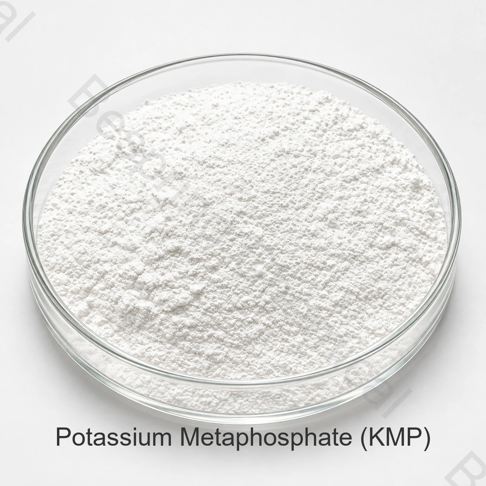

Phân tử thịt
Được đánh giá trong hệ thống phosphate thích hợp cho việc ướp xác, quản lý độ ẩm, kết cấu và mục tiêu khả thi màu.
Phosphate · Potasium muối · CAS 7790-53-6
KMP là một phosphat ngưng tụ. Đánh giá độ tan và tương tác với ion kim loại trong công thức, sau đó kiểm tra dạng hóa học và phương pháp thử của sản phẩm được đề xuất.

Hình minh họa sản phẩm · cấp chất lượng và quy cách đóng gói được nêu trong báo giá
Bao gồm ứng dụng thực phẩm, đặc điểm mục tiêu, số lượng, đích và tài liệu cần thiết.
Yêu cầu báo giá theo cấp chất lượng và số lượng dự kiến.
Thu dọn chuẩn25kg
Đối chiếu quy cách đóng gói, số lượng và điều kiện giao hàng trong báo giá của cấp chất lượng được đề xuất.
Tài liệu bóĐặc tả hiện thời và COA nếu cần thiết
Tổng quát sản phẩm
Thức ăn cấp Kali di căn (KMP) là muối phosphate được xác định bởi CAS 7790-53-6 và công thức thông thường KPO3. Lớp cung cấp là một loại bột trắng để đánh giá hệ thống xử lý thực phẩm cần chức năng phosphate mà không cần Natri.
Vật liệu này có thể hỗ trợ khả năng hấp thụ, hiệu ứng độ ẩm, làm mềm nước, làm mềm kim loại, điều chỉnh kết cấu, bảo vệ màu sắc và mục tiêu hiệu quả. Tính hiệu quả phụ thuộc vào cấu trúc hoàn chỉnh, tiến trình, quy tắc liều lượng và phương tiện điều khiển đích.
Thực phẩm hình thành sử dụng
Đánh giá các mục tiêu ứng dụng theo đây trong quá trình thực tế, dưới sự cho phép của thị trường đích.
Được đánh giá trong hệ thống phosphate thích hợp cho việc ướp xác, quản lý độ ẩm, kết cấu và mục tiêu khả thi màu.
Có thể hỗ trợ sự hóa chất béo, kiểm soát kim loại và điều chỉnh cấu trúc vi mô trong các dạng phô mai đã chọn.
Có thể đánh giá được khả năng kiểm soát khoáng sản, sự ổn định liên quan đến quá trình đệm và sự hấp thụ trong hệ thống sữa có khả năng.
Đánh giá cơ cấu vi mô và mục tiêu chất lượng trong hệ thống tuần hoàn nước được chọn thông qua các thử nghiệm hình thành.
Sự hóa kim loại và chức năng tưới nước có thể giúp quản lý sự tương tác với nước trong quá trình hình thành hoàn chỉnh.
Có thể góp phần vào việc bảo vệ màu sắc, hệ thống chống oxy hóa và mục tiêu bảo tồn khi được cho phép và xác nhận.
Đặc điểm thương mại
Những giới hạn tham khảo thương mại này là khác biệt với kết quả COA, đồng ý với các đơn vị, phương pháp và tiêu chuẩn chấp nhận trong đặc điểm đặc biệt đã được ký.
Vuốt hoặc dùng bàn phím để đọc tất cả các cột
| Chỉ tiêu | Đơn vị | Chi tiết |
|---|---|---|
| P2O5 Nội dung | % | 53.5–61.5 |
| Asen (As) | % | ≤0.0003 |
| Kim loại nặng (như Pb) | % | ≤0.001 |
| Fluorine (F) | % | ≤0.001 |
| chì (Pb) | % | ≤0.0002 |
| G_iá trị giá trị kênh ảnh | — | 3.0–5.0 |
| Diện mạo | — | Bột trắng |
Kiểm tra phương pháp: Mục nhập độ phóng đại không xác định được một đơn vị hay phương pháp thử nghiệm hoàn chỉnh. Thiết lập số lượng đo, đơn vị, tập trung, nhiệt độ và quy trình phân tích trước khi dùng nó như một tiêu chuẩn được chấp nhận.
Khả năng mua hàng
Một sự tán thành hữu ích so sánh nguồn cung cấp với quá trình thực phẩm và thị trường, thay vì chỉ dựa vào tên sản phẩm.
Xác nhận số CAS, công thức, P2O5chất khử độc, ngoại hình và phương pháp đứng sau mọi thử nghiệm quan trọng.
Cho biết cấp chất lượng, hồ sơ, lượng dự kiến, quy cách đóng gói và nơi giao.
Đánh giá KMP trong công thức thực và quá trình cho sự tương tác chất lỏng, sự tương tác khoáng chất, kết cấu, màu sắc, hương vị và mục tiêu đời kệ.
Lưu trữ và xử lý
Hỏi người mua
Nó được đánh giá bằng thịt, pho mát, sữa bốc hơi và các hệ thống mùa nước cho các chức năng như sự hấp thụ nước, quản lý độ ẩm, sự kết hợp kim loại, điều chỉnh kết cấu, bảo vệ màu sắc và ổn định quá trình.
Công thức KPO3 chứa Kali thay vì Natri. Điều này không tự thiết lập một nguồn dinh dưỡng hoàn chỉnh hoặc xác nhận nhãn; xem lại công thức đầy đủ và quy tắc địa phương.
Cho biết cấp chất lượng, hồ sơ, lượng dự kiến, quy cách đóng gói và nơi giao.
Cung cấp các ứng dụng thực phẩm đã định, mục tiêu đặc trưng và các phương pháp thử nghiệm, số lượng, bao bì, cổng đích, tài liệu và lịch trình phát.
Kali phosphat liên quan
Chất Kali kết hợp với một thành phần khác và cung cấp đặc điểm cụ thể.
Orthophophate được dùng trong các hệ thống đệm, văn hóa và lên men.
Rất có thể am hiểu alkaline pyrophophate cho hệ thống xử lý thức ăn đã được chọn.
Tìm nguồn dựa trên chỉ tiêu kỹ thuật
Hãy chia sẻ chi tiết về kỹ thuật và thương mại cần thiết để ôn lại điểm được đề nghị.
Nếu không dùng được biểu mẫu, hãy dùng trang liên hệ. Bạn cũng có thể gửi email cho bộ phận kinh doanh.
Cho chúng tôi biết điểm số và điểm đến của anh để chúng tôi có thể xác nhận tài liệu nào có sẵn cho đơn đặt hàng của anh.
Một tham chiếu bên ngoài không phải là một chứng nhận hàng loạt hoặc một đặc điểm sản phẩm Bespring.